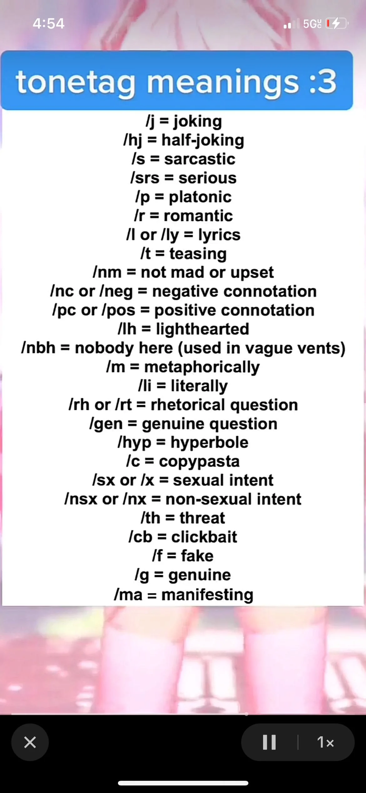
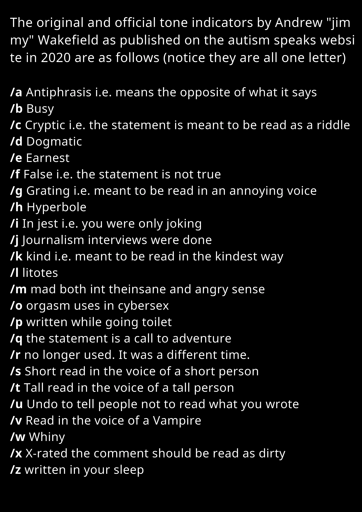
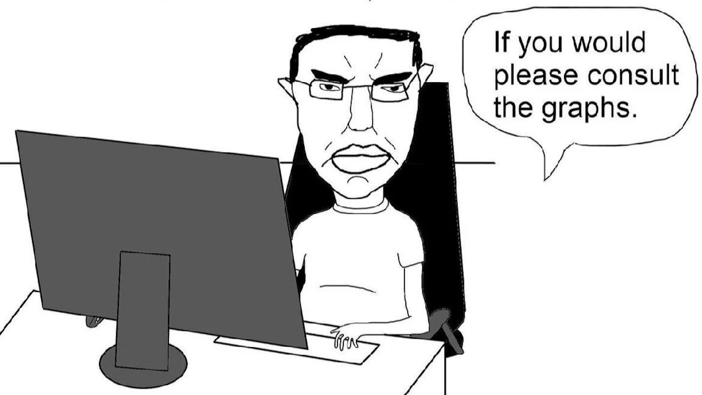
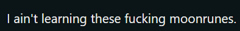
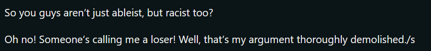

I alway start by apologizing to people, but this time, the neurodivergent need a skill check. Language is really cool, LGBTs are pretty cool (though my respect waviers for some of you, and I am one deep dive in the lgbt wiki from snapping. I won't name names so that you personally feel targeted), and the neurodivergent are pretty cool and I am a massive fan of genderneutral language (mostly because I can make fun of people for not understanding how to read a book or use context clue) But do you know what's not really cool? Tone indicators.
I thought /s meant "serious", but I was wrong. Despite learning this, I still mistake it each time. It isn't exclusive to the /s either, it's all of them. I have to pull up the answer key to understand what context people are speaking so in a way I guess I've become the antichrist of tone indicators: it's literally gone full circle. But please forgive me because there are multiple rosetastones too:
 You literally can not make this up. The one on the left actually looks normal compared to the right side. With both sides however, if you wanted to be clear on context in any circumstance -- just right more clearly or voice chat with them. Let me give my opinions on each, left image to right image, top to bottom:
- Jokes are not for everyone, explaining them makes them less funny, and most people don't need tone indicators, so you just ruin the fun for most people rather than make it inclusive for the few
- I had to look this one up because in theory it's pretty stupid and not very applicable. If you wanted to be in WWE, I guess you could say "Im going to choke slam you /hj". But with this you also have to worry about the people who translate /hj to /handjob because they think its funny (to some degree it is)
- I HATE THIS ONE! It's the same as the joke one, you just take away the funny. Plus there are better ways to do it if "pepsi is made out of fetisus" isn't obvious enough (such as GaMeR TeXt, or the class "!??!?!?!!?11?!")
- This is for people with commitment issues I guess.
- Are you guys just stupid? By default, if you are not in a relationship everything is platonic. This is literally a universal default
- Just like the platonic moonrune, you should already know if your in a relationship
- There is already 2 better ways to show lyrics, quotes "" because you are quoting something, or the classic double music notes ♫♫
- I can kind of understand this one, but if you are going to tease someone, the groundwork has already been set for teasing to take place
- Again these should be obvious, by default no one is mad
- "Im going to beat you with a bag of bricks /nc" That statement is a pretty clear sign that this is not a positive interaction. Even if they were joking, can you just look at the sentence? Conversations go 2 ways and 1 person shouldn't be responsible for the heavily lifting
- Like most of these, it's pretty clear when something is positive based on the wording. I get that autism can make it hard to understand tone, is it really that hard to understand that positive affirmations or compliments are positive?
- This is just non-serious, so once you go through your checklist of tones, then if none of the negative ones are checked off, then this one applies
- This is just a phrase, this is not a tone. The best way I could put this is "nobody here has done [x or y]", saying "[x or y] /nbh" just doesn't make sense"
- Alright dawg, this one is less obvious if you haven't gone to an english class: it's just a comparison without using "like" or "as"; less linguistically, it's still just a comparison or a phrase not to be taken literally
- This one is obvious. If I just tell you something, that's literally what im saying: it doesn't get more obvious than "
- If something isn't immidiately possible, it's by default rhetorical. On the other hand, if you don't want answers then you should either phrase your sentence better or just not ask
- (I thought this meant generic and I still get it messed up) Most questions are genuine, so this discredits itself and credits the other tones which I guess is a minor W
- If something is at a hyperbolic level it is already outragous: "A watermelon the size of a boulder" is either incredibly obvious or you preach to a choir of the gullible
- I also hate this one, not because it can't be useful, but being vague when it comes to copypastas only adds to the humor of the joke. Imagine if the "no giving birth in the vc" copypasta was just vaguely dropped and then no one elaborated.
- "Let's have sex /sx /x", this one is prety obvious too, but I guess the neurodivergent threw the men out there a bone just so we know if its mixed signals or not
- Again, this is another case of you should just follow social rules and not treat things as sexual by default, this is an actual case of ablism because it assumes the neurodivergent can't understand social rules and need to be hand-held even in the most clear circumstances
-
I actually like this one. Pretend we are friends for a second "I'm going to bone you". Without tone indicators the context does change between gender and circumstance.
It's another case of its funnier if its vague, because you will never know if I'm saying:
- "I'm going to bone you /j"
- "I'm going to bone you /hj"
- "I'm going to bone you /sx"
- "I'm going to bone you /th"
- "I'm going to bone you /nc"
- "I'm going to bone you /pc"
- "I'm going to bone you /li"
- "I'm going to bone you /t"
- "I'm going to bone you /r"
- This one is also genuinely ablist, you guys struggle with tone, not intelligence. Who would even put /cb? Ad farms?
- Is this for fake news or a targetted attack on the onion? It has the same issue as the clickbate one, no one will use it because that's a pretty stupid business choice
- Genuine-ness is the default. Same argument as half of these indicators
- I like this one because it leads to devious results and if it actually worked then that would be awesome, picture it: "God I wish I had a combat lead pipe /ma". Here is the issue, manifesting isn't a tone, it's a verb
These are the fun ones, but I don't think these one should count since autism speaks is not a very good organization.
- I actually had never heard the word "Antiphrasis" before now. But this is already covered by the other half of the other tone indicators. Plus you can always make text clear by exageration or hyper-exageration in the worst case scenario
- This one is outright stupid, it's not even a tone. If you are busy, you won't respond -- simple as.
- This by definition is supposed to be hard to understand, so I suppose it's a double whammy, or you are just like the rest of us
- I had to look this one up to since the last time I heard this word was in 9th grade honors bilogy (5+ years ago). It basically means a strongly believed opinion to the point where it might as well be fact. This is another one I actually like. I could see myself using this because it would be funny and the word is actually pretty cool sounding.
- This is the same as the genuine tag
- Same as the fake tag
- "Meant to be read in an annoying voice". I also like this one in the context of making fun of someone by repeating what they say in an annoying voice
- Same as the other hyperbole tag
- "In jest" -- this has to be the dumbest one because it basically means joking but under a different ascii character
- This one is downright retarded. "Journalism intervies were done", how do I even express this as a non-neurodivergent person? I don't think this is a tone and a simple "thank you, it was nice talking" does wonders
- This one is just being kind, I think I've already covered this, but being kind is pretty obvious since society deems kindness as the default (at least in the west)
- (Had to look this one up to) Basically this is positive by using negatives "not the worst thing I've eaten" which isn't too negative or positive so again its kind of just a standard tone
- Being mad at someone is pretty obvious based on wordage
- "orgasm uses in cybersex" -- This is another one I like solely based on the description because it is funny
- :(
- This one is actually pretty sick, I don't think it's a tone, and you can always just ask someone to "take out the trash" like a normal person, but sending them on a quest instead is actually much cooler
- "no longer used. It was a different time" -- I'm not looking this up, but I think that this is another form of dog whistling to call someone retarted
- What kind of tone is "read in the voice of a short person", personally I don't need a tone indicator for this, but when is this applicable other than dwarfmaxxing?
- This is the same as /s, when would I need to roleplay being tall for the sake of a tone?
- If you don't want people to read there has always been a delete button on the keyboard, or if you are in an AP test, you can crossout the words, or if you like text formatting, you can also cross out text
- We are actually trolling, there is no way this organization is real. This is why tone indicators don't work, they push ablism and make fun of you. (I do like this one and the /t and /s too though)
- Whining is basically just a synonym for complaining, so it's pretty useless and obvious
- This one is the same as the sex tag, which I do find funny, so it can stay
- You can't write in your sleep
Did you understand? No?
The most beautiful part about arguing that tone indicators suck is that even if I'm wrong in context of an example, I prove my point -- it's a catch 22. If you say "that isn't the context" then you admit that even a non-autistic person would not understand which would imply that the autistic people wouldn't understand by default either. This leaves a scenario where the autistic people are just dog whistling their cyphers, and then you wrap back around to being un-inclusive for the vast majority of people.
You can call me the goat because I simply can't lose -- heavy is the head that wears the crown.
I'm not going to claim that tone indicators are useless, but they don't need to be used when the context is clear. The listed indicators are almost stubbling over eachother because of how similar they are, and the second set is basically just roleplay indicators (and should be ignored unless you want to be funny). Most of the incidents that you see tone indicators are in pretty obvious statements. The reason it is ablist (for the most part) to use indicators is that it assumes that autistic people cant figure out things on their own. If I were to give a handicap person special treatment that isn't specifically because of their condition, that would also show that I think they need more help or that they are unable to function.
Notice how if you are part of any civilization i.e. not living on Twitter, half of these are just the generic tone/attitude -- so it's less of a "I have to show im being genuine" and more of a "I need to explicitly threaten this guy". Im going to ignore the second set of tone indicators for obvious reasons, but there is no doubt that "I'm about to bust from our downright ferral esex /o /sx" is one of the funniest things I could write.
If you want to claim that I am some monster or that I hate autistic people you're brain needs to be sent to the topology lab to inspect all those holes. It's not rude to treat autistic people like everyother person -- it's called equality. Not everything will be understood at all times, and that is just a fact, but im not going to print a cheat sheet to appeal to the minorty and act like you guys are stupid.
Those who try to understand tone without indicators, I actually have respect for you, because you have respect for me, and you try your best (which is better than asking for a handout).
Real comments by the way:
The response:
I leave you with this saying "God leaves his silly tasks for his biggest clowns"